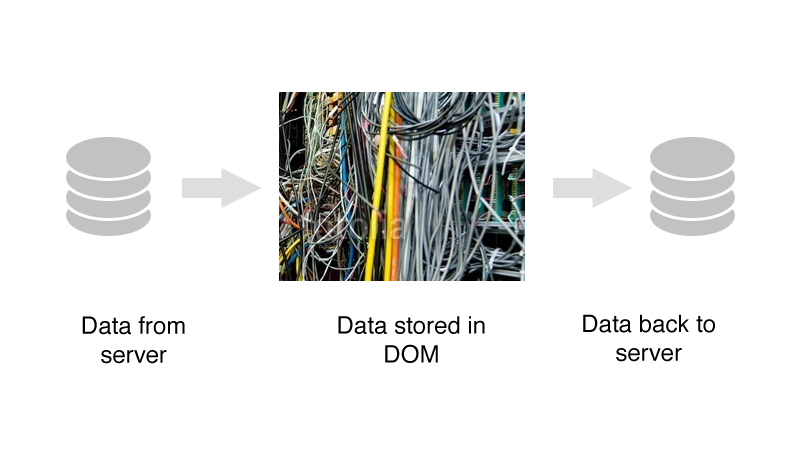
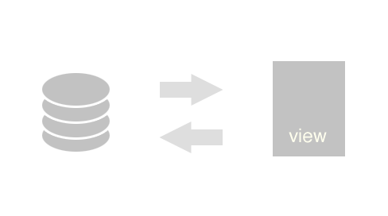
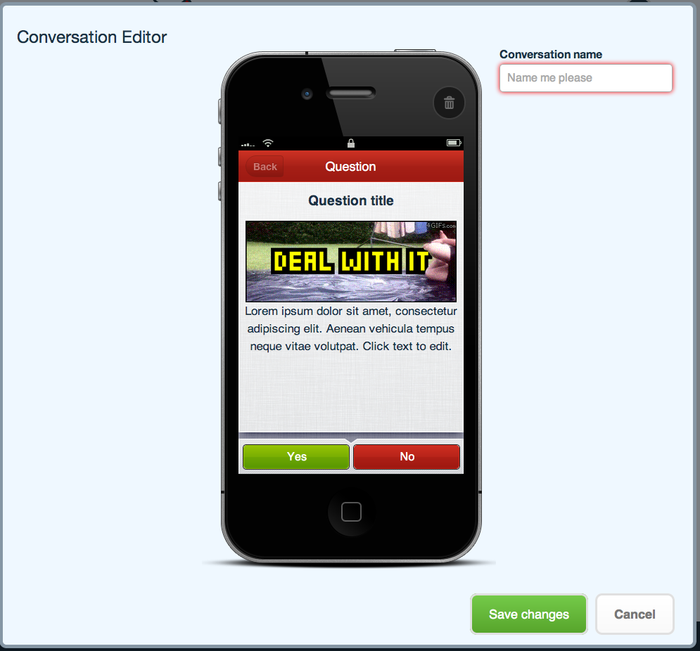

Introduction to
A Superheroic MVW Framework
A Conversation
First version
Frameworks
- Backbone
- Knockout
- Ember
- ... MVWTF
A grand aim
HTML is static
Opinionated
Two-way binding
Hello world
Hello {{world}}!
Code:
<ul>
<li><input placeholder="Give me a name!" ng-model="world" /></li>
</ul>
<h3>Hello {{world}}!</h3>
Moar data
- {{item}}
HTML:
<ul>
<li ng-repeat="item in model.listItems">{{item}}</li>
</ul>
JS:
$scope.model = {
listItems: ['Item one',
'Item two',
'Banana']
}
Directives
Markdown example
Markdown Example HTML
<textarea markdown></textarea>
<div class="preview"></div>
Markdown Example JS
angular.module('presentationApp.directives', []).
directive('markdown', function() {
var converter = new Showdown.converter();
return {
restrict: 'A',
link: function(scope, element, attrs) {
element.bind('blur keyup change', function() {
var htmlText = converter.makeHtml(element.val());
$('.preview').html(htmlText);
});
}
}
});
Directives
- Custom HTML tags and attributes
- Can apply templates
- Abstract complex logic from views
- Nestable
Techniques learned
- Models for data
- Binding to views
- Manipulating with directives
Real world example
Did it help?
- Data management
- Code structure
In summary
Good stuff
- Opinionated
- Extendable
- Magical binding
- Growing community
- It does a lot
Not so good
- Opinionated
- Breaking changes
- Not for every app

Resources
- AngularJS: http://angularjs.org
- Developer Guide
- AngularJS Docs
- AngularJS Changelog
- Loads of Youtube videos
- Google Group
- IRC: #angularjs / Freenode
- Angular Cheatsheet
Thanks
- Donovan Hutchinson
- Converser.io
- Twitter: @donovanh
- Blog: http://hop.ie